2 Grafika BASE
2.1 Wczytanie danych
load(file = "am8_jittered.rda")2.2 Pusty wykres
Zanim zaczniemy przygotowywać wykresy kilka słów na temat technikalów związanych z kreśleniem wykresów
plot(0 ,
xlim = c(0, 10), # zakres osi x
ylim = c(-3, 5), # zakres osi y
# xaxt="n", # włączenie wyłącza oś x
# yaxt='n', # włączenie wyłącza oś y
main = "", # tytuł wykresu
ylab = "", # tytul osi y
xlab = "" # tytuł osi x
)
box(lwd = 2)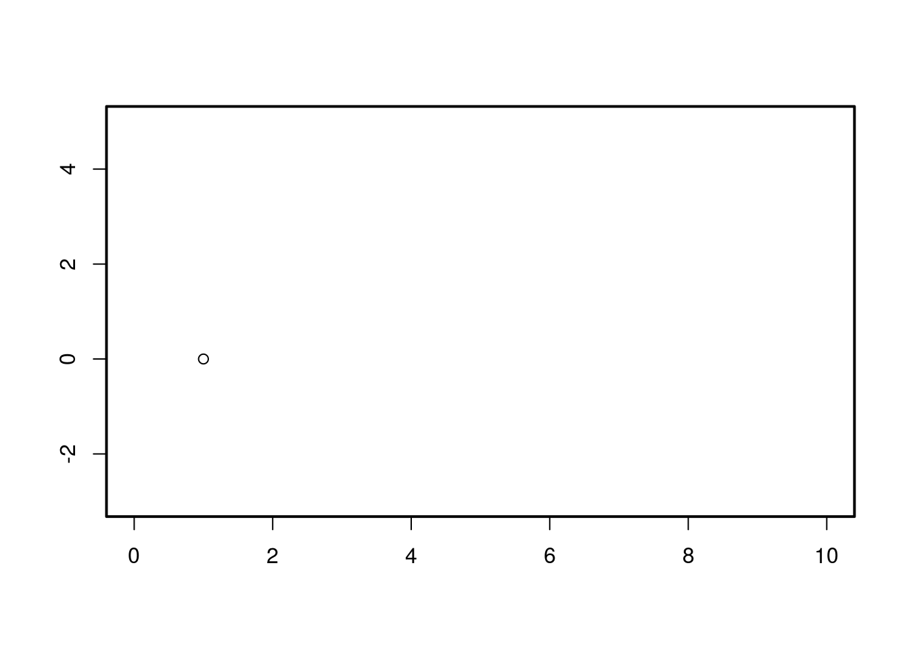
Uzupełnijmy osie i tytuły
plot(0, 3,
xlim = c(0, 10), # zakres osi x
ylim = c(-3, 5), # zakres osi y
type = "n", # tyn wykresu, wpisane n nie wyświetla punktów
# xaxt="n", # włączenie wyłącza oś x
# yaxt="n", # włączenie wyłącza oś y
main = "Przykładowy wykres", # tytuł wykresu
ylab = "Oś X", # tytul osi y
xlab = "Oś Y", # tytuł osi x
las = 1 # obrót etykiet osi (ustalone na poziomo)
)
box(lwd = 2)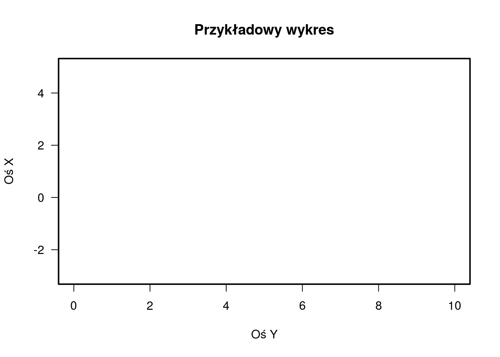
2.3 Wykres kolumnowy
Najczęściej dotyczy prezentowania częstości. Zatem przygotujmy dane odzwierciedlające częstość przekraczania dobowych norm PM10 na stacji am8
library(dplyr)
library(tidyr)
library(lubridate)drop_na(am8) %>%
group_by(DATE) %>%
summarize(PM10d = mean(PM10)) %>%
mutate(PM10ex = ifelse(PM10d>50, 1, 0)) -> df
df$MONTH = lubridate::month(df$DATE)
table = table(df$PM10ex, df$MONTH) barplot(table[ 2, ],
ylim = c(0, 30),
xlab = "MIESIĄC",
ylab = "Częstość przekroczeń PM10",
las = 1)
box(lwd = 2)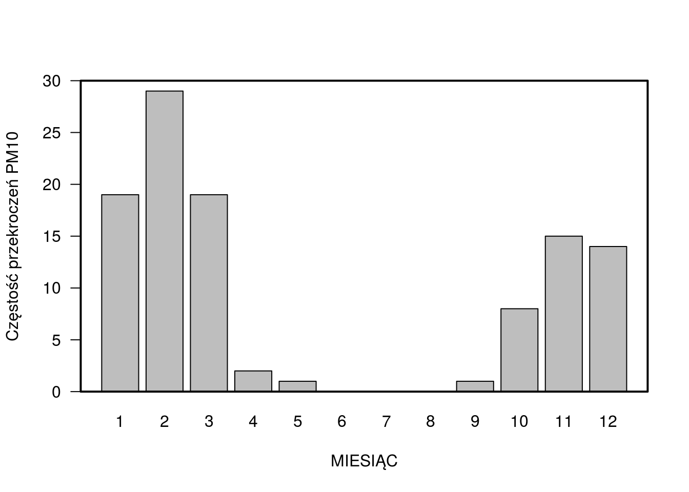
barplot(prop.table(table[ 2:1, ], margin = 2))
box(lwd = 2)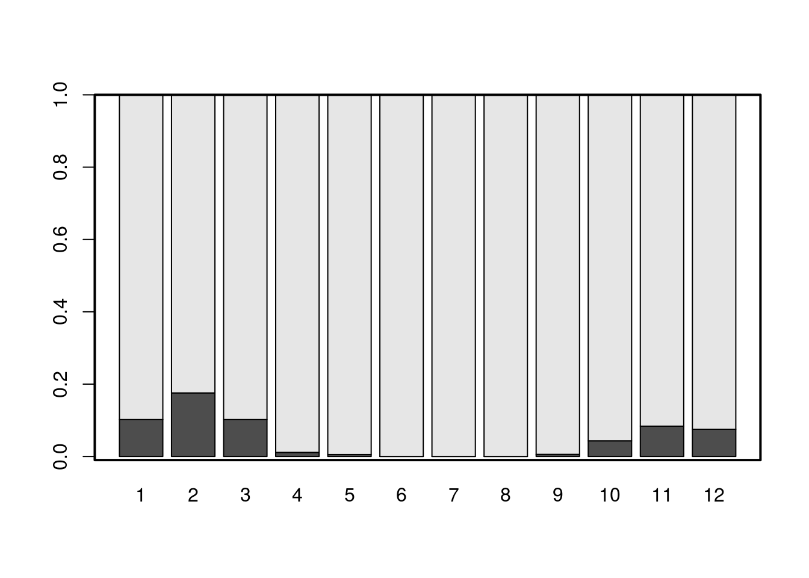
barplot(prop.table(table[ 2:1, ], margin = 2)[1, ],
ylim = c(0, 0.20),
las = 1,
xlab = "MIESIĄC",
ylab = "Częstość",
main = "Odsetek (%) dni z przekroczeniem normy PM10 na stacji AM8")
box(lwd = 2)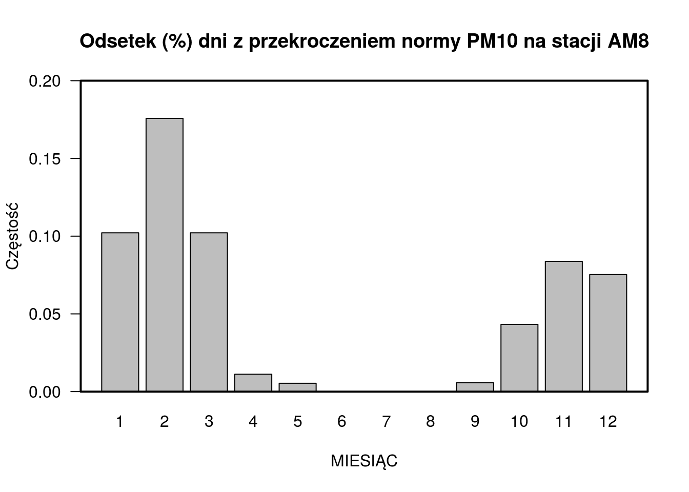
2.4 HISTOGRAM
hist(df$PM10d,
main = "Stężenia PM10 na stacji AM8",
col = "orange",
xlab = "PM10")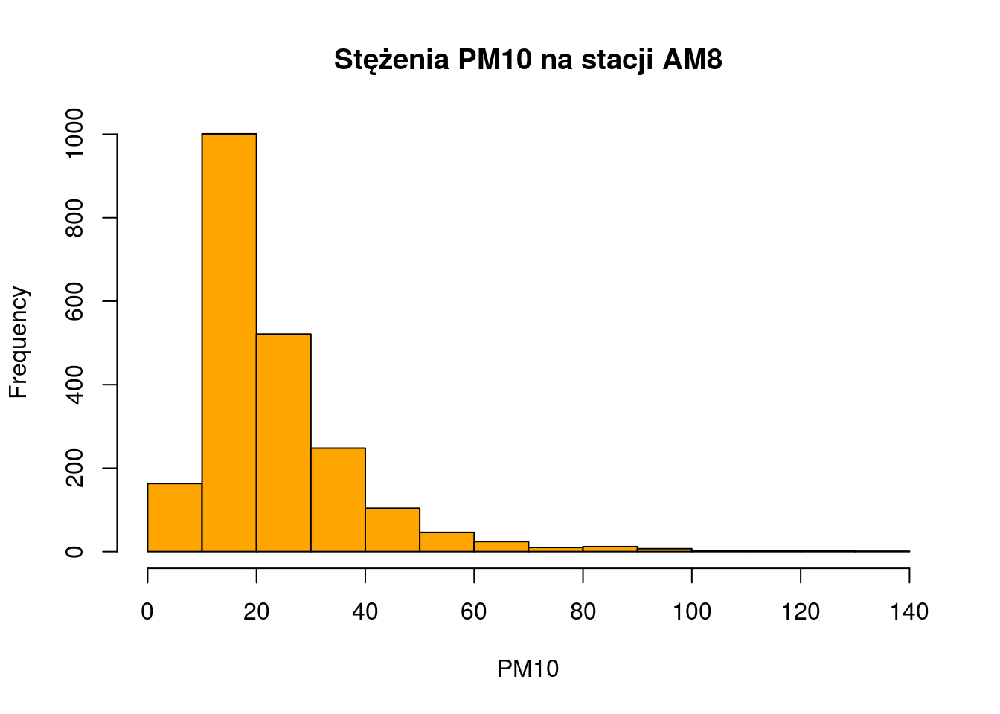
Można porównywac stężenia np dla róznych miesięcy
hist(df$PM10d[which(df$MONTH == 1)],
main = "Stężenia PM10 na stacji AM8",
col = "orange",
xlab = "PM10")
hist(df$PM10d[which(df$MONTH == 6)],
main = "Stężenia PM10 na stacji AM8",
col = "black",
xlab = "PM10",
add = T)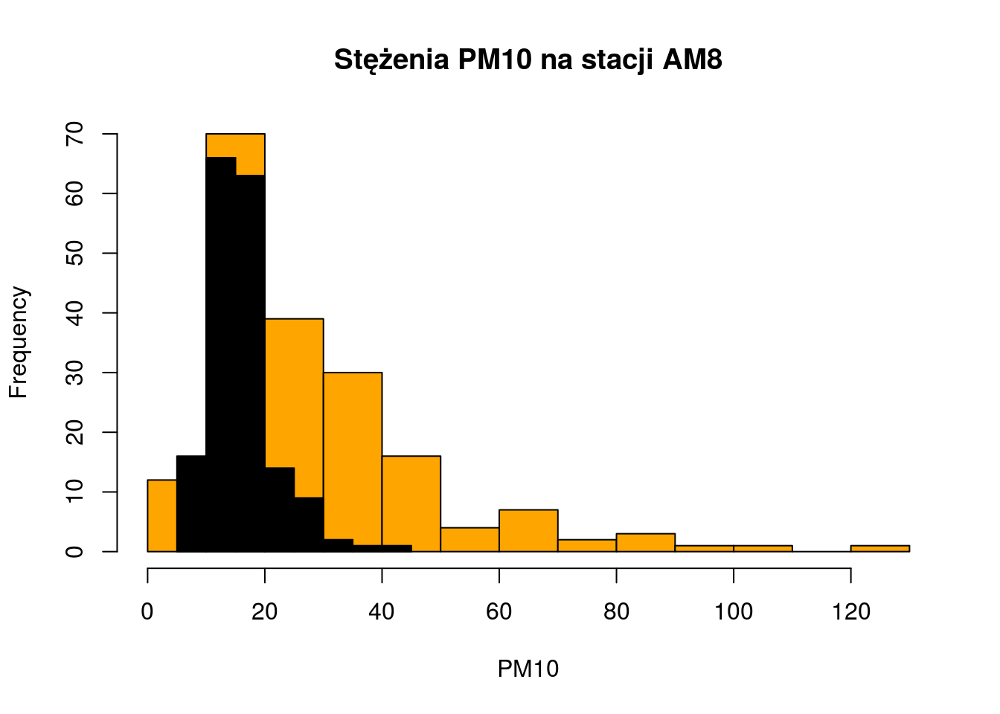
hist(df$PM10d[which(df$MONTH == 1)],
prob = TRUE,
main = "Stężenia PM10 na stacji AM8",
col = "orange",
xlab = "PM10")
hist(df$PM10d[which(df$MONTH == 6)],
prob = TRUE,
main = "Stężenia PM10 na stacji AM8",
col = "black",
xlab = "PM10",
add = T)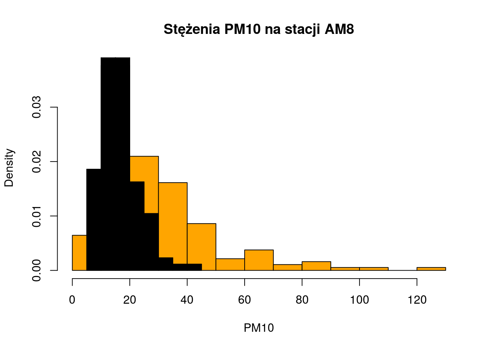
hist(df$PM10d[which(df$MONTH == 1)],
prob = TRUE,
breaks = seq(0, 140, 10),
main = "Stężenia PM10 na stacji AM8",
col = rgb(0, 0, 0, 0.5),
xlab = "PM10")
hist(df$PM10d[which(df$MONTH == 6)],
prob = TRUE,
breaks = seq(0, 140, 10),
main = "Stężenia PM10 na stacji AM8",
col = rgb(1, 0, 0, 0.5),
xlab = "PM10",
add = T)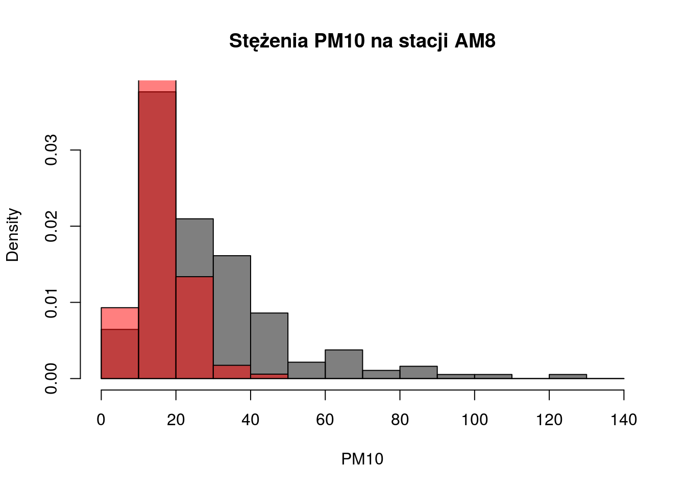
hist(df$PM10d[which(df$MONTH == 1)],
ylim = c(0, 0.1),
prob = TRUE,
breaks = seq(0, 140, 10),
main = "Stężenia PM10 na stacji AM8",
col = rgb(0, 0, 0, 0.5),
xlab = "PM10")
hist(df$PM10d[which(df$MONTH == 6)],
prob = TRUE,
breaks = seq(0, 140, 10),
main = "Stężenia PM10 na stacji AM8",
col = rgb(1, 0, 0, 0.5),
xlab = "PM10",
add = T)
legend("topright",
c("STYCZEŃ", "CZERWIEC"),
fill = c(rgb(0, 0, 0, 0.5), rgb(1, 0, 0, 0.5))
)
box(lwd = 2)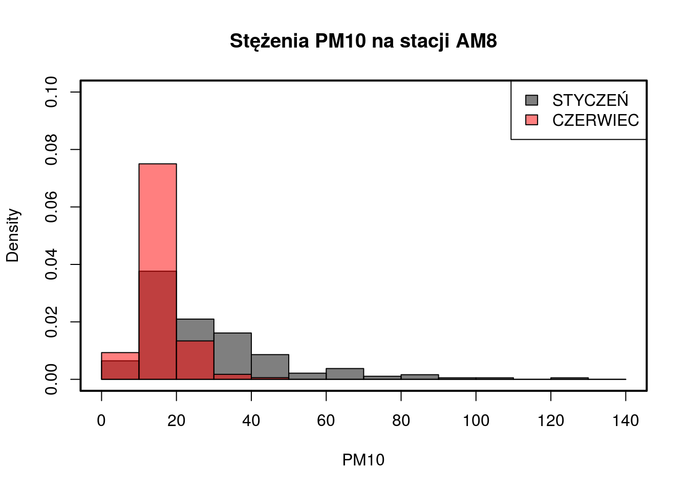
2.5 WYKRES LINIOWY
Załóżmy, że interesuja nas styczniowe przebiegi stężeń PM10 przedstawione jako cykl dobowy.
Obliczmy je zatem i przedstawwy za pomocą wykresu liniowego.
Zaczynamy od przygotowania danych
drop_na(am8) %>%
filter(MONTH == 1) %>%
group_by(HOUR) %>%
summarize(PM10ave = mean(PM10),
PM10sd = sd(PM10))-> dfhead(df, 15)## # A tibble: 15 x 3
## HOUR PM10ave PM10sd
## <int> <dbl> <dbl>
## 1 0 32.6 25.9
## 2 1 31.7 31.8
## 3 2 29.0 32.1
## 4 3 26.3 32.0
## 5 4 23.8 23.6
## 6 5 23.2 26.0
## 7 6 22.2 21.1
## 8 7 22.0 19.4
## 9 8 23.9 20.5
## 10 9 27.5 22.5
## 11 10 30.5 23.8
## 12 11 29.0 21.8
## 13 12 26.9 19.3
## 14 13 25.8 17.3
## 15 14 25.1 19.2plot(df$HOUR, df$PM10ave, type = "b",
xlim = c(0,23),
xlab = "GODZINA",
ylab = "Stężenie PM10",
las = 1)
box(lwd = 2)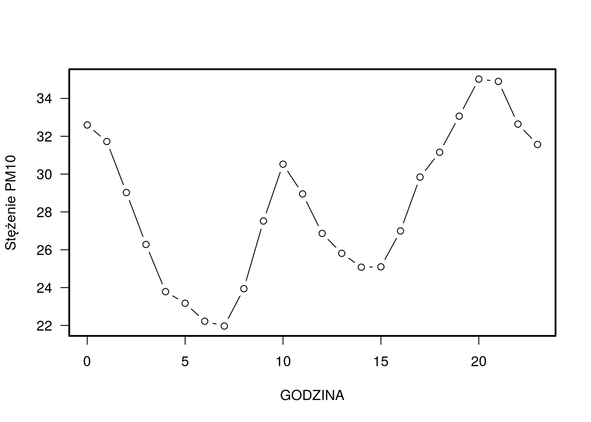
Załóżmy że interesuja nas takie przebiegi dla poszczególnych miesięcy i dodatkowo chcielibyśmy je umieścic na jednym wykresie. Możemy wówczas dodac kilka linii kodu aby R policzył to za nas i co więcej ładnie rozmieścił i narysował
par(mfrow = c(3,4))
for(i in 1:12){
drop_na(am8) %>%
filter(MONTH == i) %>%
group_by(HOUR) %>%
summarize(PM10ave = mean(PM10),
PM10sd = sd(PM10))-> df
plot(df$HOUR, df$PM10ave, type = "b",
xlim = c(0,23),
xlab = "GODZINA",
ylab = "Stężenie PM10",
las = 1)
mtext(i)
box(lwd = 2)
}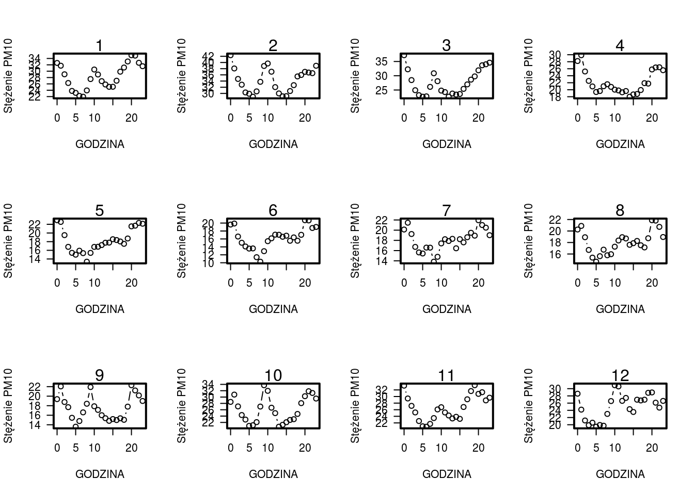
par(mfrow = c(3,4), mar = c(1, 1, 3, 1), oma = c(3, 4, 0, 0))
for(i in 1:12){
drop_na(am8) %>%
filter(MONTH == i) %>%
group_by(HOUR) %>%
summarize(PM10ave = mean(PM10),
PM10sd = sd(PM10))-> df
plot(df$HOUR, df$PM10ave, type = "b",
xlim = c(0,23),
# xlab = "GODZINA",
# ylab = "Stężenie PM10",
#xaxt= "n",
#yaxt= "n",
las = 1,
ylab = "", # tytul osi y
xlab = "") # tytuł osi x
mtext(i, side = 3, line = 0.5)
box(lwd = 2)
}
mtext("GODZINA", side = 1, line = 2, outer = TRUE)
mtext("Stężenie PM10", side = 2, line = 2, outer = TRUE)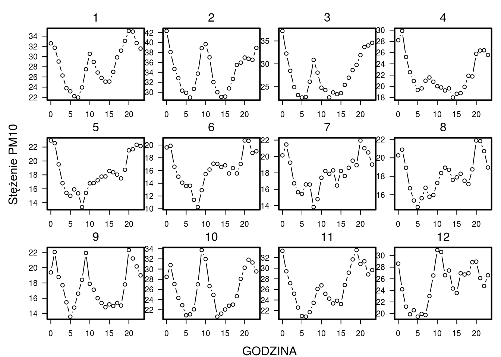
2.6 BOX-PLOTS
drop_na(am8) %>%
group_by(DATE) %>%
summarize(PM10ave = mean(PM10)) %>%
mutate(MONTH = lubridate::month(DATE)) -> pm10d
boxplot(pm10d$PM10ave~pm10d$MONTH,
xlab = "MIESIĄC",
ylab = "PM10")
abline(h = 50, col = 2)
box(lwd = 2)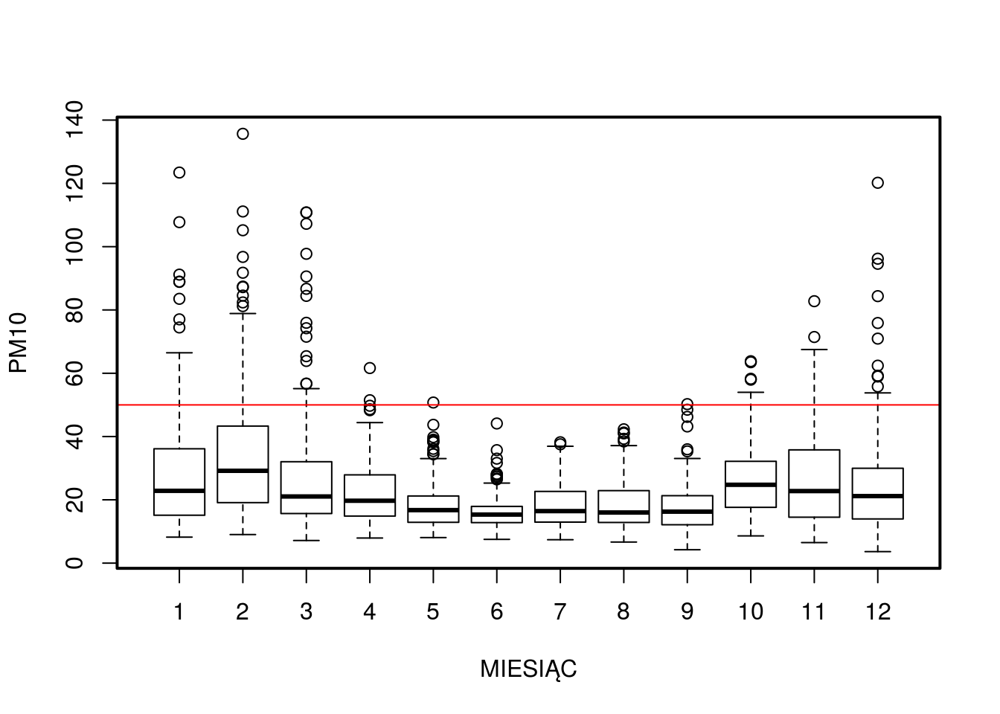
boxplot(pm10d$PM10ave~pm10d$MONTH, outline=FALSE,
xlab = "MIESIĄC",
ylab = "PM10")
abline(h = 50, col = 2)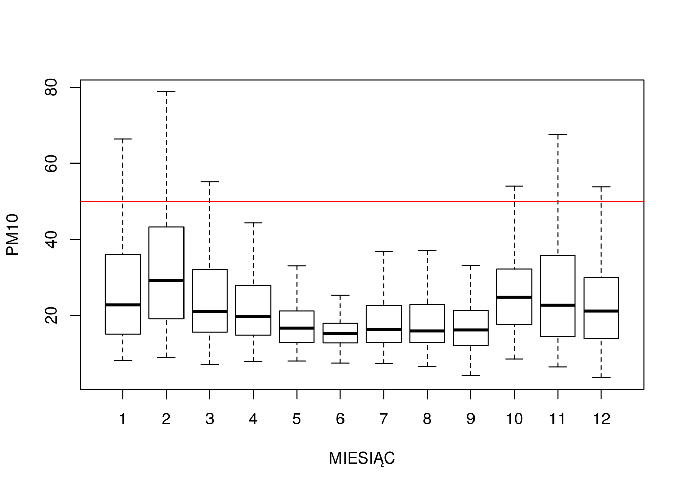
2.7 ZAPISYWANIE
jpeg(filename="boxplot.jpeg",width = 3500, height = 2400,
units = "px", pointsize = 24, quality=100, res=150)
boxplot(pm10d$PM10ave~pm10d$MONTH, outline=FALSE,
xlab = "MIESIĄC",
ylab = "PM10")
abline(h = 50, col = 2)
box(lwd = 2)
dev.off()## png
## 2